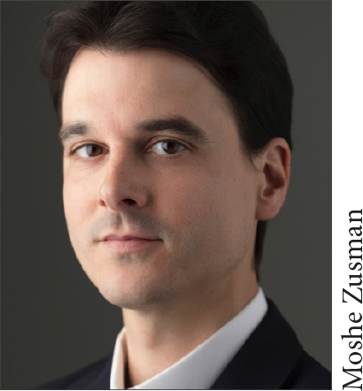

Brian C. Muraresku graduated Phi Beta Kappa from Brown University with a degree in Latin, Greek, and Sanskrit. As an alumnus of Georgetown Law and a member of the New York Bar, he has been practicing law internationally for fifteen years. He lives outside Washington, DC, with his wife and two daughters. You can sign up for email updates here.